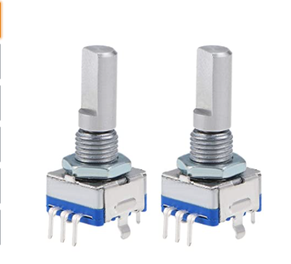
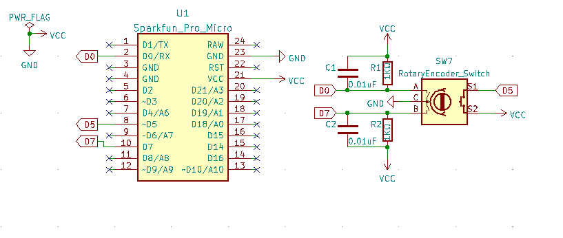

シューです
前回、キーボードの試作を完成させましたね
今回は#3で紹介した目標のくるくるの部分の試作をします
なんかクルクル回せるやつなんですが、仕組みが少し複雑なので調べてみてください
可変抵抗という回すと抵抗値を出力するものがあります
それと似ていますが、ロータリーエンコーダは抵抗値は何も出力しませんし
場所の絶対座標も相対座標も出力しません。
接点が二つあるんですが、どうのこうのして処理をしていきます
ちょっと癖があるんですね
たとえば、マウスのクルクルの部分、ホイールですね
あそこもロータリーエンコーダですね
やりたいことは単純です。クリスタというペイントソフトのキャンバスをクルクル回したいのです
ショートカットもあるんですが、可視化できた方が直感的でわかりやすいと思いませんか？
私はそう思います
今回は使うロータリーエンコーダはこちら

uxcellさんの7ピンのものですね
Amazonで購入しました
回路を作成します

調べて分かったんですが、これ真ん中がGNDなんですよ。騙された
これでどれだけ時間をかけたことか...
すこしだけ回路の解説をします
A、Bのピンはデジタルピンに接続します
これが実際に波形を出力するピンです
プルアップ抵抗とノイズ対策用のコンデンサ0.01uFだよをつなげます
コンデンサはまだ購入していないので今回はつなげずにいきます
S1、S2はスイッチのピンですこちらはスケッチでプルアップするので抵抗はなしです
スケッチはこちら
気づいたかもしれませんが、かなりごり押しです（）
ロータリーエンコーダのライブラリがあったのでそちらを使用しています
して、クルクル回すと回転し押し込みをするとすべてもとに戻ります
実際の動作はこちら
やばいwwwwwまじでキタコレwwww pic.twitter.com/ZH1LU8ZYDJ
— シュー.dll (@H2DH8K) January 10, 2022
興味ないかもしれないですが裏話です
これが中々苦戦しましてね
ABCと端子があるんですが、Cが真ん中だなんて気づくのに時間がかかりましたね
記事をみたら右からABCになっていたんですね
動画をみてACBだって気づきましたね。あーつらい
それに接触不良なのかはわかんないんですが、これまた中々目的の処理化できなくて...
それにピンも間違えたりと散々でしたね
まぁそんなんです
スケッチはもう完成させたので次回は基板を作っていこうかな？
ここまでやってくるのも中々大変でしたので、完成が今か今かと待っています
ではまた
ツイートする